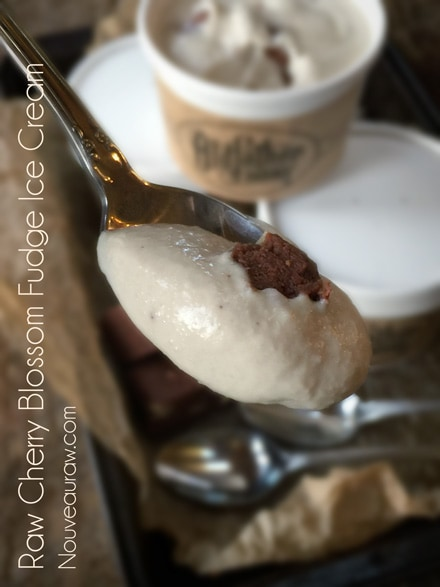
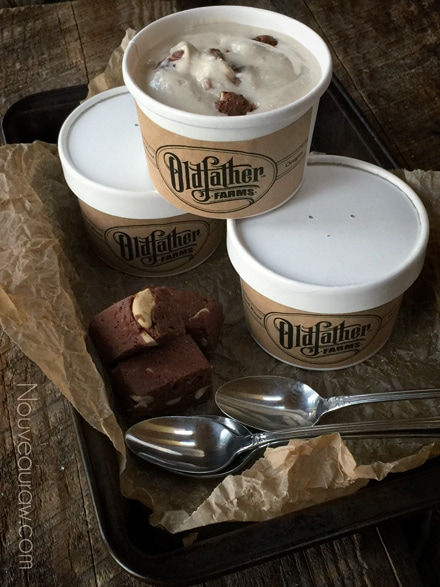

Cherry Blossom Fudge Ice Cream

~ raw, vegan, gluten-free ~
Creamy, vanilla bean ice cream with thick chunks of Cherry Blossom Fudge… now really… doesn’t that sound delightful?
Is eating ice cream a seasonal event for you? I like to ask this question because when I lived in Alaska, we enjoyed ice cream year-round. The local ice cream parlors didn’t seem to be lacking traffic flow even in the coldest months of the year. Granted, they may have had a tad fewer customers than in the summertime, but there were always one or two people ahead of me. Crazy Alaskans.
Temperature and Taste
Taste buds on the tongue tend to work better at warmer temperatures. I am not referring to the ambient temperature; I am talking about inside your mouth.
When we eat really cold foods, such as ice cream, taste buds literally go numb. This causes a decrease in taste. As we all know, ice cream doesn’t taste sweet when it is frozen solid; the sweetness only shines through as it begins to melt on your tongue. That is why I often suggest allowing the ice cream to sit at room temperature for 10+ minutes before eating it. This way, you can enjoy all of the flavors.
But here’s the thing… When ice cream melts and refreezes (for example, when the container is left out on the counter to soften, you remove the amount that you want to eat, and then returned the remains to the freezer), its smaller ice crystals melt and then refreeze into larger ice crystals, which causes a grainy texture next time you take it out to eat. That is one of the reasons that I love putting ice cream in single-serving containers when I first make it. The other reason is portion control, and they are just so darn cute. Enjoy!
 Ingredients:
Ingredients:
yields 5 cups batter
Cherry Blossom Fudge:
Ice cream:
- 1 1/2 cup cashews, soaked 2 + hours
- 1 cup almond milk
- 2 cups thick coconut milk, raw or canned
- 1/3 cup maple syrup
- 2 tsp vanilla extract
- 1 vanilla bean, seeds only
- 1 squirt liquid stevia
- 1/8 tsp Himalayan pink salt
- 2 Tbsp cold-pressed coconut oil
Preparation:
Cherry Blossom Fudge:
- Follow the link above to make the fudge. You will only use about 1/4 of the batch, so either reduce the recipe to a smaller portion or enjoy the fudge later. It freezes perfectly.
- Place the fudge in the freezer, so it is cold when you add it to the ice cream. This fudge doesn’t freeze solid.
Ice Cream:
- Place the cashews in a glass bowl along with 4 cups of water and a pinch of salt. Soak for at least 2 hours.
- The soaking process helps reduce the phytic acid, which will aid in digestion.
- It also softens the cashews, so they blend nice and creamy.
- After soaking the cashews, drain and discard the water.
- In a high-powered blender add; almond milk, coconut milk, maple syrup, vanilla, stevia, salt, and cashews. Blend until it is smooth and creamy.
- Stop the blender occasionally to test the batter for grittiness by rubbing a little batter between your thumb and finger. If you feel any grit, continue the blending.
- I wanted the vanilla flavor to punch through so I used an extract and the seeds of a vanilla bean. Use whatever form of vanilla you have one hand.
- Place the blender carafe in the fridge to chill for at least an hour.
- Once thoroughly chilled, pour the ice cream batter into the ice cream machine and follow your manufacturer’s instructions.
- Stop the machine about 5 minutes early. Remove the paddle, scraping the excess ice cream off of it (or call in the troops for a licking)
- Add the cubed brownie bites into the ice cream and gently fold them in.
- Enjoy right away, soft-serve style, or put the ice cream in safe freezer containers.
Freezing Suggestions for Ice Cream:
-
Use an ice cream machine. Follow the manufactures directions.
-
Freeze in popsicle molds or 3 oz Dixie cups with a popsicle stick inserted.
-
-
Store the ice cream in the very back of the freezer, as far away from the door as possible. Every time you open your freezer door you let in warm air. Keeping ice cream way in the back and storing it beneath other frozen-sold items will help protect it from those steamy incursions.
-
Ice cream is full of fat, and even when frozen, fat has a way of soaking up flavors from the air around it—including those in your freezer. To keep your ice cream from taking on the odors, use a container with a tight-fitting lid. For extra security, place a layer of plastic wrap between your ice cream and the lid.
-
To soften in the refrigerator, transfer ice cream from the freezer to the refrigerator 20-30 minutes before using. Or let it stand at room temperature for 10-15 minutes.
-
Wish to make your own raw ice cream, wonder what machine I might recommend, and more? Click (
here) to check out the Reference Library!

© AmieSue.com